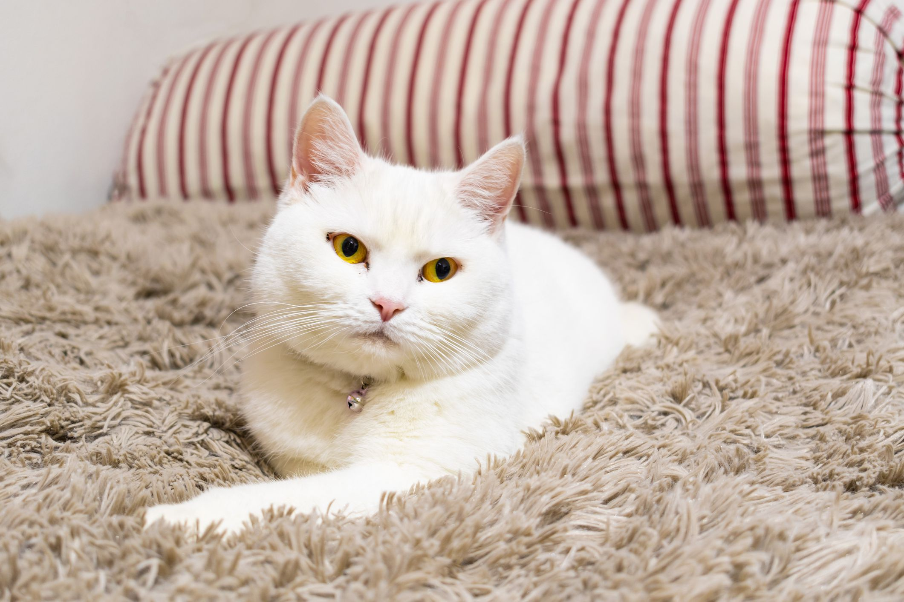

Meet Pluto

Breed: British Short Hair
Age: 4 years old
Sex: Male
Location: Ventura, CA
Adoption Fee: $80
Description: Pluto is an independent cat who has an old soul. She is more calm and reserved than other cats, but will still find ways to show you she cares. She loves to always be around someone, but from a distance. If you're looking for a little spoon, Pluto loves to sleep with her owner under the blankets on cold nights.